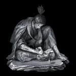
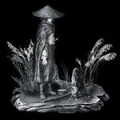

Finales
Shura
Requisitos
- Obtener la Espada Mortal, el Loto del palacio y la Piedra cobijo
- Obedecer el Código de Hierro y traicionar a Kuro
- Derrotar a Emma, la Espada Gentil e Isshin Ashina
Después de obtener la Espada Mortal, el Loto del palacio y la Piedra cobijo, todos los ídolos del escultor en el Castillo Ashina (excepto el ídolo Entrada a mazmorra abandonada) se volverán inaccesibles. El Búho se encontrará en la cima del castillo, presentando a Sekiro la opción de obedecerlo o ser leal a Kuro. Se debe elegir la opción "Obedecer el Código de Hierro y traicionar a Kuro".
Abandono de la inmortalidad
Requisitos
- Obtener la Espada Mortal, el Loto del palacio y la Piedra cobijo
- Desobedecer el Código de Hierro y ser leal a Kuro
- Derrotar al Dragón divino y obtener sus lágrimas
- Derrotar a Isshin, maestro espadachín
- Entregarle a Kuro las Lágrimas del dragón divino
Después de obtener la Espada Mortal, el Loto del palacio y la Piedra cobijo, Sekiro tendrá los medios necesarios para acabar con la inmortalidad del Descendiente Celestial. Todos los ídolos del escultor en el Castillo Ashina (excepto el ídolo Entrada a mazmorra abandonada) se volverán inaccesibles. El Búho se encontrará en la cima del castillo, presentando a Sekiro la opción de obedecerlo o ser leal a Kuro. Se debe elegir la opción "Desobedecer el Código de Hierro y ser leal a Kuro".
Sekiro deberá vencer al Gran shinobi - Búho y luego tendrá que viajar al Palacio del Manantial para obtener las Lágrimas del dragón divino, derrotando al Dragón divino. En el momento de su regreso al castillo, Isshin habrá muerto y Emma le entregará al Lobo la Llave del pasadizo secreto para rescatar a Kuro.
Purificación
Requisitos
- Obtener la Espada Mortal y alguno de los ingredientes del incienso (Loto del palacio o Piedra cobijo)
- Agotar el diálogo y espiar a Kuro en el Castillo Ashina
- Estar de acuerdo con Emma en que Kuro no debe morir
- Obtener el ingrediente del incienso restante
- Desobedecer el Código de Hierro y ser leal a Kuro
- Obtener la Nota de Tomoe de Emma y luego hablar con ella en la Tumba antigua
Después de obtener la Espada Mortal y alguno de los ingredientes del incienso, Sekiro podrá espiar a Kuro en varias ocasiones. Después de su diálogo sobre "hacer lo que se deba hacer", hay que hablar con Emma cerca del ídolo Puesto de vigilancia de la torre del castillo. El Lobo debe estar de acuerdo con Emma en que Kuro no debe morir.
Después de derrotar al Búho, Sekiro debe hablar con Emma una vez más para recibir la Nota de Tomoe. Luego se la podrá encontrar en la Tumba antigua, donde hay que hablar con ella; luego se trasladará al Templo desolado. Después de espiar a Emma y al Escultor (desde la parte trasera del templo), Sekiro debe confrontarla para recibir el Amuleto de campana del padre, el cual permite acceder a la segunda versión de la Hacienda Hirata para poder derrotar al Búho (padre) y obtener la Flor aromática.
Retorno
Requisitos
- Obtener la Espada Mortal, el Loto del palacio y la Piedra cobijo
- Desobedecer el Código de Hierro y ser leal a Kuro
- Pedirle arroz a la Niña Celestial hasta que se enferme y luego curarla con un caqui común o un caqui de Taro
- Agotar todo el diálogo de Kuro y la Niña Celestial (incluyendo la charla en los Salones de la Ilusión)
- Entregarle a la Niña Celestial el Capítulo sagrado: el regreso del Dragón
- Entregarle a la Niña Celestial las frutas seca y fresca
Después de obtener la Espada Mortal, el Loto del palacio y la Piedra cobijo, todos los ídolos del escultor en el Castillo Ashina (excepto el ídolo Entrada a mazmorra abandonada) se volverán inaccesibles. El Búho se encontrará en la cima del castillo, presentando a Sekiro la opción de obedecerlo o ser leal a Kuro. Se debe elegir la opción "Desobedecer el Código de Hierro y ser leal a Kuro".
Para iniciar la questline de este final primero hay que obtener el Capítulo sagrado: apestado. Si Sekiro va al Templo Senpo antes de derrotar a Genichiro en la cima del Castillo Ashina, el Monje del Salón principal se lo entregará, pidiéndole que se lo entregue a la Niña Celestial; de lo contrario, el libro se encontrará en el fondo del lago en los Terrenos del templo (será necesaria la Técnica de respiración Mibu). Se debe entregar el libro a la Niña Celestial y pedirle arroz (hay que consumirlo para poder recibir más) hasta que se enferme, luego hay que curarla con un caqui común o un caqui de Taro. Después de esto, la Niña Celestial le dará a Sekiro arroz para Kuro, quien a su vez, obsequiará al Lobo con una Bola de arroz dulce.
Hay que hablar nuevamente con la Niña Celestial, pero esta vez en los Salones de la Ilusión, donde ella le pide a Sekiro que busque al Sumo Sacerdote de Senpo que se encuentra en una cueva oscura cerca del Salón principal. En su cadáver se encuentra el Capítulo sagrado: el regreso del Dragón, el cual hay que entregar a la Niña Celestial.